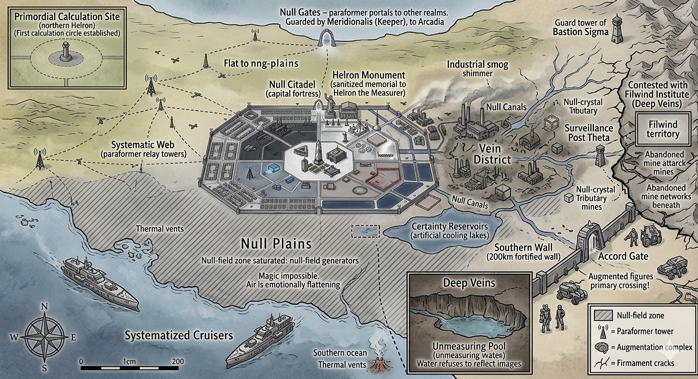

The Military-Industrial Technocracy — Where Efficiency Meets Power

The Helron State — showing Null Plains, industrial zones, paraformer towers, augmentation complexes, and the Southern Wall
The Helron State stands as a unique entity in the Eastern Plane—a military-industrial technocracy where corporate efficiency, technological innovation, and martial prowess have replaced traditional feudal governance. Unlike the monarchies and theocracies that dominate the region, Helron operates as a corporate state where citizenship is tied to employment, leadership is meritocratic, and progress is measured in production quotas and technological advancement.
The state's origins trace back to the Primordial Era, when the Number-Touched—humans who could perceive and manipulate the underlying mathematical patterns of reality—established the first proto-corporations. These early organizations pooled resources, shared knowledge, and developed the systematic approaches that would eventually evolve into Helron's corporate governance.
Today, Helron is governed by the Triumvirate: the Director (chief executive), the President (head of state), and the High Marshal (military commander). The state's defining characteristics are its Augmented Legions (soldiers enhanced with cybernetic implants), its massive Drone Corps (autonomous war machines), and its relentless pursuit of technological superiority. The current conflict with the Filwind Institute—a renegade research organization—threatens to destabilize this carefully engineered society.
Primordial Origins (Abs. 1,400-2,584): Helron's foundations were laid by the Number-Touched—humans who developed the ability to perceive mathematical patterns underlying reality during the Primordial Era's cognitive evolution. These individuals established the first resource-pooling cooperatives, which evolved into proto-corporations with systematic approaches to survival and resource management.
The Covenant of Lies (Abs. 2,584): Helron's ancestors approached the Covenant negotiations with characteristic pragmatism. They secured territories rich in mineral resources and geothermal energy, correctly predicting that these would fuel future industrial development.
Corporate Consolidation (Year 1,000-1,800 / Abs. 3,585-4,385): The proto-corporations merged and consolidated through a series of hostile takeovers, strategic alliances, and efficiency-driven acquisitions. By Year 1,800, three mega-corporations dominated the region: Helron Industries, Core Dynamics, and Sentinel Systems.
Triumvirate Formation (Year 2,000 / Abs. 4,585): The three mega-corporations formalized their governance structure, creating the Triumvirate system. Each corporation would provide one leader, and decisions would require consensus.
Filwind Institute Conflict (Year 8,800 / Abs. 11,385): The Filwind Institute—a research organization originally part of Helron Industries—declared independence, accusing the state of suppressing dangerous but potentially revolutionary research. The ongoing conflict has escalated from corporate dispute to existential threat.
The Triumvirate: Helron is governed by three leaders: The Director (Chief Executive), The President (Head of State), and The High Marshal (Supreme Military Commander).
Citizenship Structure: Helron citizenship is tied to corporate employment:
Corporate Divisions: Helron Industries (manufacturing), Core Dynamics (energy), Sentinel Systems (defense), BioSynthetics (medical/agricultural), and DataStream (communications).
Efficiency Ideology: Helron citizens are raised to value efficiency, productivity, and optimization above all else. Waste is considered morally wrong.
Quantified Self: Citizens constantly track their own metrics—productivity, health, social connections, learning progress.
Pathology: Optimization Trap: The primary psychological risk is obsessive optimization—constantly seeking to improve metrics at the cost of human connection, creativity, and mental health.
Null-Walker Training: Specialized mental conditioning allows certain individuals to enter "null-state"—complete emotional detachment enabling rational decision-making regardless of circumstances.
Secular State: Helron is officially secular, though it promotes a quasi-religious ideology of Progress—the belief that technological advancement and efficiency optimization are moral imperatives.
The Cult of Mechanus: A significant minority worships Mechanus, the Ethereal of Order and Machines. This worship is tolerated because it aligns with state values.
Ancestor Data: Rather than traditional ancestor worship, Helron practices "data veneration"—maintaining and consulting the accumulated knowledge of deceased citizens.
Corporate Family: Traditional family structures have been largely replaced by corporate units. Citizens identify more with their work team than their biological relatives.
Social Credit System: Citizens accumulate "social credit" based on productivity, community service, and compliance with state norms.
Augmentation and Identity: Cybernetic augmentation is common and socially expected for advancement. Those who refuse augmentation are viewed as limiting their potential.
Functional Art: Art that serves no function is considered wasteful. Permitted art forms include data visualization, architectural design, product aesthetics, and propaganda.
Competitive Entertainment: Sports and games must demonstrate measurable skill and clear winners. Team-based competitions reinforce corporate values.
Culinary Culture: Food is viewed primarily as fuel. Nutritionally optimized meals are standard, with taste being secondary.
Currency: Credits (digital), Corporate Scrip (division-specific), Resource Tokens (exchangeable for specific goods).
Planned Economy: The state operates a centrally planned economy with production quotas, resource allocation, and distribution managed by the Director's office.
Trade Relations: Helron exports manufactured goods, technology, and military equipment. Imports include raw materials and food.
Cybernetic Augmentation: Widespread augmentation: Basic (60%), Professional (25%), Military (10%), Extensive (5%).
Lifespan: Average 140 years with augmentation, with the oldest extensively augmented citizens reaching 250.
Augmentation Rejection: "Naturals" who reject cybernetic implants face significant social and professional disadvantages.
Geographic Overview: Helron occupies a compact but resource-rich territory featuring the Industrial Core, Geothermal Fields, Mineral Mountains, Agricultural Zones, and a heavily fortified Defense Perimeter.
Capital: Null Citadel (Helron Prime): The primary fortress-city houses 8 million inhabitants in optimized vertical structures. Contains the Triumvirate Tower, Board Hall, and central facilities for all corporate divisions. The city operates as a demonstration of Helron efficiency principles, built around the Null Gate—a paraformer portal to Arcadia guarded by Meridionalis.
Industrial Zones: Specialized regions dedicated to specific industries—manufacturing, energy production, research facilities, drone assembly. Each zone is optimized for its function with worker housing integrated for minimal commute times.
City Map — Null Citadel (Helron Prime)

Detailed cartography: Director's Spire, Spire of Calculations, Triumvirate Hall, DataStream Archives, Research & Administrative Precincts, Paraformer Foundries, Drone Assembly Bays, Augmented Military Barracks, Null Canals, Null Gate (to Arcadia), Primordial Calculation Site, Resonance Tower, Experimental Complex, and the Unaugmented Citizenry Housing district.
Key Districts (from map):
Notable Landmarks: Primordial Calculation Site (First Calculation Circle), Helron's Monument, DataStream Archives, Resonance Tower (defense), Experimental Subjects Compound, Null Canals network, Drone Patrol Corridor, and the Unaugmented Citizenry Housing district.
Cybernetics: Helron leads the Eastern Plane in neural interfaces, sensory enhancement, motor enhancement, data processing, and life support systems.
Drone Technology: Combat drones, surveillance drones, worker drones, and swarm drones form the backbone of Helron automation.
Filwind Institute Research: The rogue Institute has developed technologies beyond state approval: consciousness uploading, reality manipulation, and potentially world-threatening weapons.
The Augmented Legions: Legionnaires (300,000 standard augmented infantry), Specialists (50,000 specialized roles), Officers (50,000 enhanced tactical command).
The Drone Corps: Autonomous military force with combat drones, swarm units, and defense platforms.
The Null-Walkers: Elite special operations units trained in emotional nullification—assassins, saboteurs, and crisis commanders.
Military Doctrine: Overwhelming force through drone swarms, precision strikes by augmented specialists, information dominance through surveillance, and rapid adaptation through modular systems.
The Filwind Institute represents an existential threat to Helron's entire system through technological challenge, ideological competition, talent recruitment, and information warfare.
The state must either destroy the Institute (risking loss of valuable research) or negotiate (risking legitimization of rogue science). Neither option guarantees survival of Helron's current system.
Capital fortress-city housing 8 million in optimized vertical structures. Contains Triumvirate Tower, Board Hall, and the Null Gate. — See detailed city map above
Seat of government housing the Director, President, and High Marshal's offices. The most secure building in Helron.
Remote research complex in the Mineral Mountains. Houses renegade scientists and their forbidden research. Potentially contains world-threatening technology.
Specialized regions dedicated to manufacturing, energy production, and research. Each optimized for its function with integrated worker housing.
Heavily fortified borders protected by automated defenses, drone patrols, and Augmented Legion garrisons.
Facilities where citizens receive cybernetic implants. Range from basic clinics to specialized centers for military-grade augmentations.
Helron State — Industrial zones, Null Plains & paraformer network
View full sizeHelron Prime — Research precincts, foundries & Null Gate
View full size